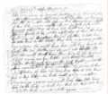

SALEM WITCHCRAFT PROJECT
241
Shelden, Susannah
v. Elizabeth Colson
Shelden, Susannah
v. George Jacobs Jr.
Shelden, Susannah
v. Rebecca Jacobs
Shelden, Susannah
v. Elizabeth Proctor
Shelden, Susannah
v. John Proctor
Shelden, Susannah
v. John Willard

| small | large |

| small | large |